車の組み立て¶
箱を開けて多くの部品をチェックするとき、とても興奮しているか？忍耐を持って、気楽にやってください。次の手順を**注意深く**読んでください。各ステップが終了したら、マニュアルの図に基づいて作業を再確認してください。心配しないで！いくつかの特定のステップでヒントが与えられる。チュートリアルに一歩一歩で従ってください。さて、もう騒ぎは無く、今から始めよう！
フロントハーフシャーシ¶
4つの**M3x25銅製スタンドオフ**と**M3ナット**で前部ハーフシャーシを組み立てる：
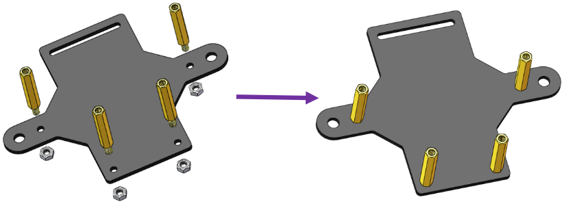前輪¶
注釈
組み立てる前に、ステアリングコネクタの方向に注意してください。
以下に示すように、M4x25ネジ**を一つの**ステアリングコネクタ、3つの**ベアリングシールド**、3つの**六角前輪固定プレート**、と一つの**前輪**を通して**M4セルフロックナット**(方向に注意してください)に挿入する：
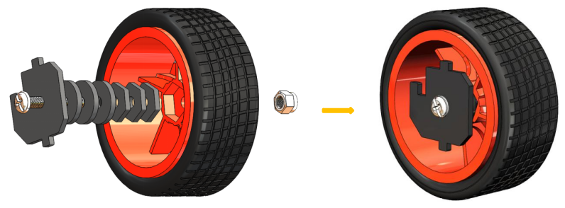クロスソケットレンチを使用して**M4セルフロックナット**を固定してからドライバーを使用して**M4x25ネジ**を締める。
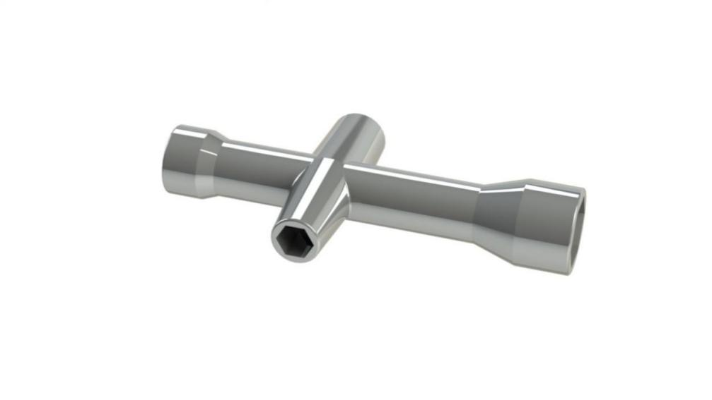注釈
セルフロックナットはしっかりと締まっていることを確認してください。車輪とステアリングコネクタが動かなくなるまでネジを締め、次にネジを少し緩めて、ステアリングプレートだけが動くようにする。したがって、接続が緩すぎない場合、ホイールは柔軟に回転できる。
同じ方法で他の前輪を組み立てるが、車輪のステアリングコネクタは前のものと対称であることを覚えておいてください：
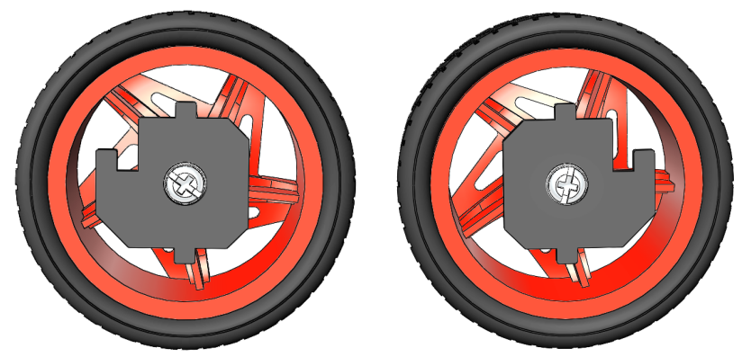これで2つの前輪の組み立てが完了した。
ステアリングパーツ¶
**ステアリングリンケ**ージと**1アームロッカーアーム**を**M1.5x4セルフタッピングネジで**接続します。
注釈
ギアから最も遠いアームの最初の穴（下の矢印で示されている）に挿入します。
注釈
それらをしっかりと締めてから、ネジを少し緩め、ステアリングリンケージが柔軟に動くようにする。
上部プレート¶
最初に**M2.5x8銅製スタンドオフ**と**M2.5ナット**を**上部プレート**に取り付ける。突き出た支柱が上に向くように注意してください。
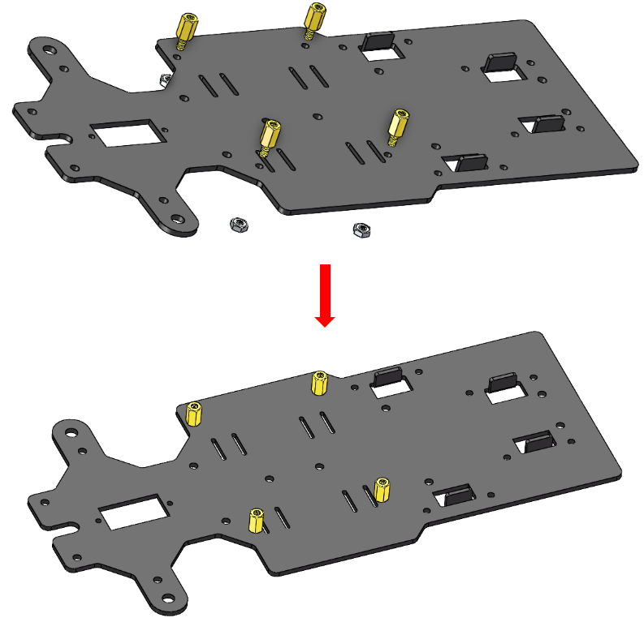バッテリーホルダー¶
上部プレートを裏返しにする。**リボン**を半分にカットする。プレートの穴に通す。方向に注意して、バッテリーを後で簡単に取り外すことができるように、プレートの一方の端を長くしてください。
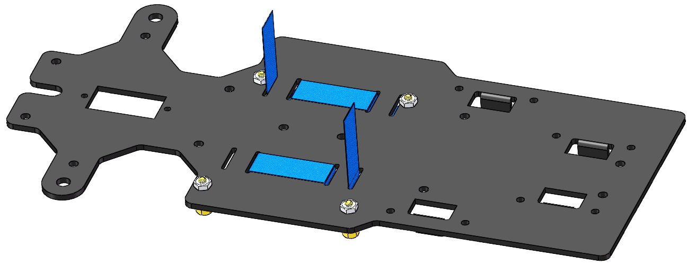2本の**M3x8皿ネジ**と**M3ナット**でバッテリーホルダーを固定する：バッテリーホルダーのワイヤーの方向に注意してください。
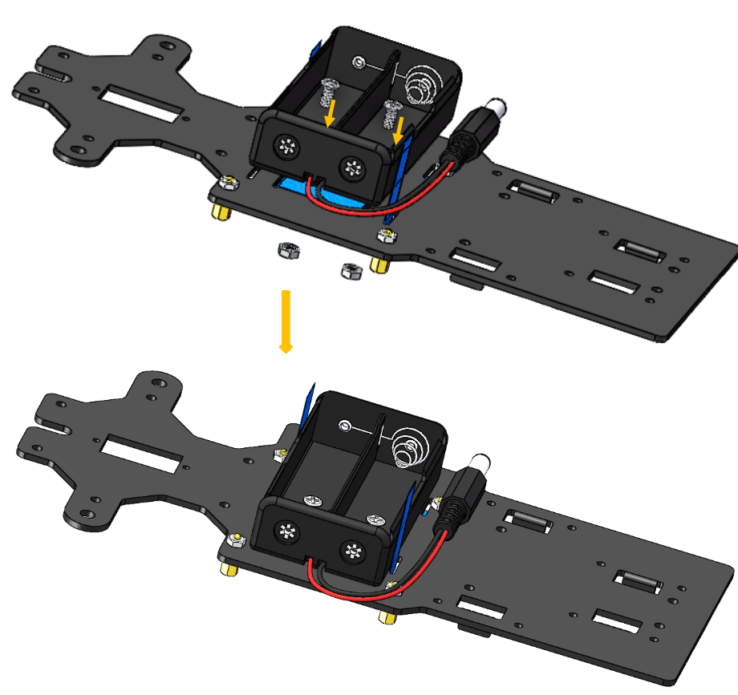後輪（ネジ）¶
4本の**M3x25銅製スタンドオフ**を備えた**4本のM3x8ネジ**を差し込む：
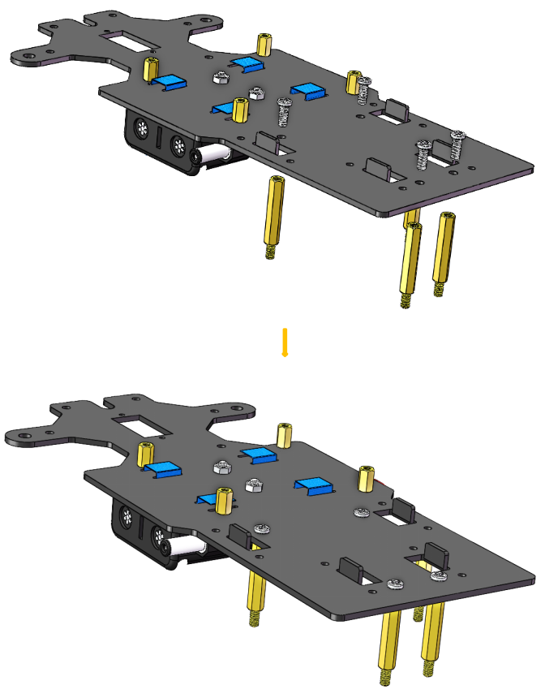PCB組み立て¶
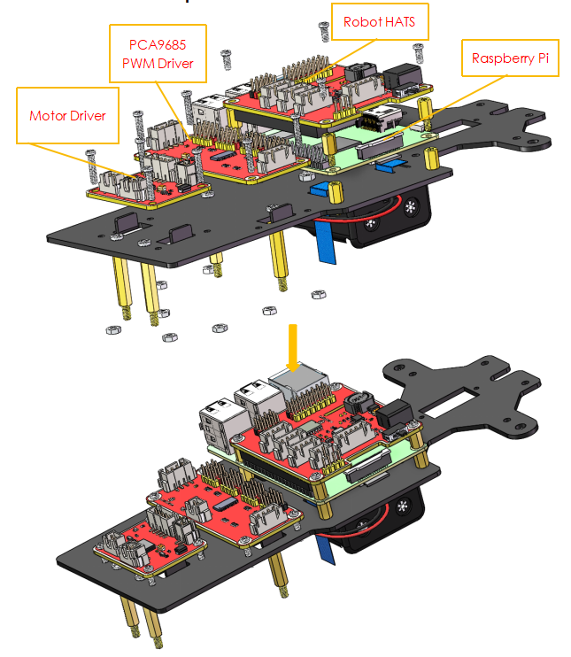後輪（走行）¶
4本の**M3x25ネジ**と**M3ナット**で2つのモーターを後部ハーフシャシーに組み立てる。モーターを配線で内側に配置するように注意してください。こうすると、回路を接続することを便利にする。
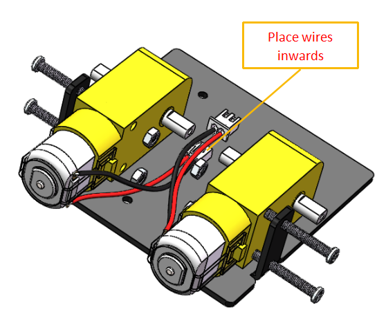4つのM3ナットで後輪を組み立てる。
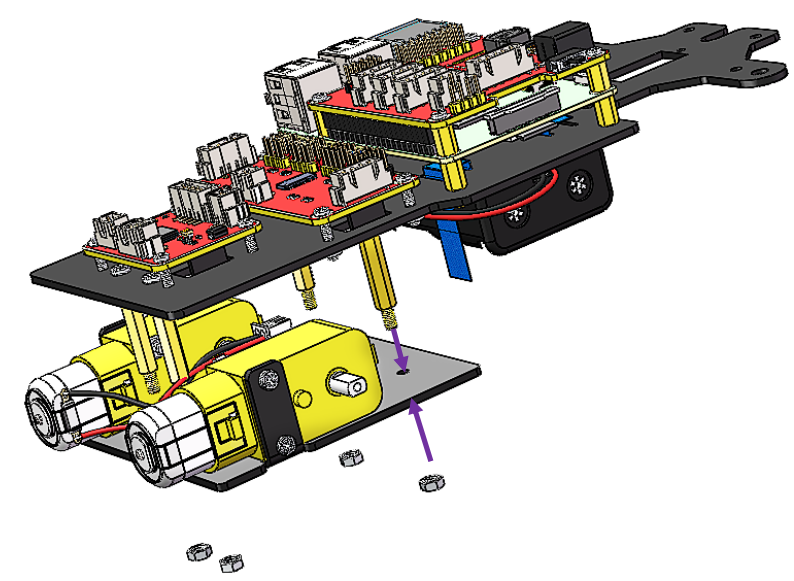**後輪**をモーターシャフトに合わせ、回転させてやさしく差し込む。
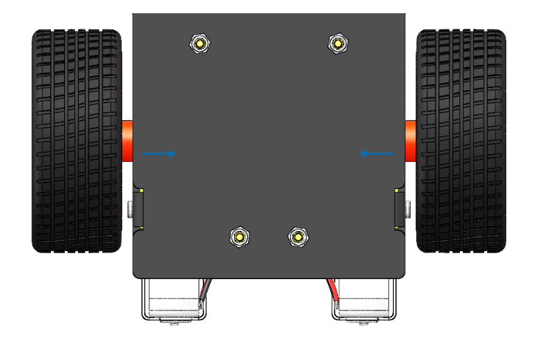